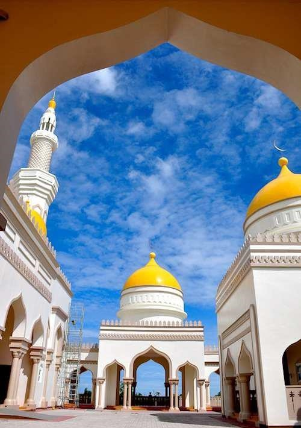

BARMM, which stands for Bangsamoro Autonomous Region in Muslim Mindanao, is an autonomous region located in the southern part of Mindanao island in the Philippines. It is the result of the peace agreement between the Philippine government and the Moro Islamic Liberation Front (MILF) to establish self-governance and promote the welfare of the Bangsamoro people, who are predominantly Muslim.
BARMM is composed of five provinces: Basilan, Lanao del Sur, Maguindanao, Sulu, and Tawi-Tawi, as well as the cities of Cotabato and Marawi. The region is known for its unique cultural heritage, stunning natural landscapes, and historical significance.
Basilan is an island province known for its lush forests, beautiful beaches, and diverse marine life. It offers attractions such as the stunning Malamawi Island, the scenic Lamitan City, and the historic Santa Isabel Fort. Basilan is also home to the Yakan people, known for their vibrant and intricate traditional crafts.
Lanao del Sur is a province known for its picturesque landscapes, majestic lakes, and rich cultural traditions. It offers attractions such as the captivating Lake Lanao, the magnificent Agus Hydroelectric Complex, and the stunning Maria Cristina Falls. The province is home to the Maranao people, known for their vibrant arts, music, and architecture.
Maguindanao is a province known for its scenic landscapes, historical landmarks, and cultural heritage. It offers attractions such as the beautiful Lake Buluan, the enchanting Asik-Asik Falls, and the culturally significant Sultan Kudarat Monument. Maguindanao is home to the Maguindanaoan people, known for their colorful festivals and traditional crafts.
Sulu is an island province known for its pristine beaches, coral reefs, and historical sites. It offers attractions such as the stunning Patar White Beach, the captivating Tubbataha Reefs Natural Park, and the culturally significant Jolo Cathedral. Sulu is home to the Tausug people, known for their vibrant traditions and martial arts.
Tawi-Tawi is an island province known for its picturesque landscapes, diverse marine life, and vibrant culture. It offers attractions such as the stunning Panampangan Island, the captivating Bud Bongao Peak, and the culturally significant Badjao Village. Tawi-Tawi is home to the Sama-Bajau people, known for their seafaring traditions and craftsmanship.
BARMM provides the Bangsamoro people with self-governance and aims to promote peace, development, and the preservation of their cultural heritage. The region offers a rich tapestry of natural wonders, cultural traditions, and historical landmarks for visitors to explore and appreciate. From pristine beaches to vibrant festivals, BARMM provides a unique and immersive experience in the cultural heartland of Mindanao.